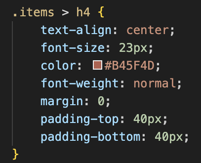
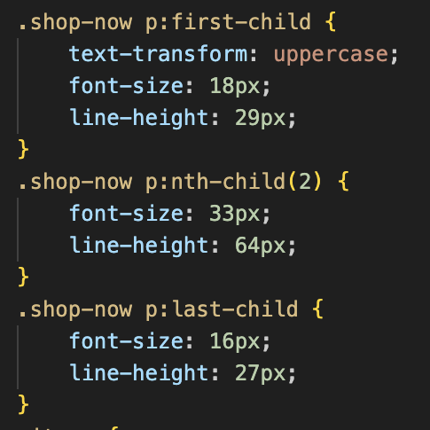
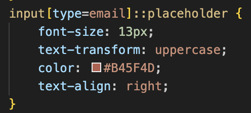
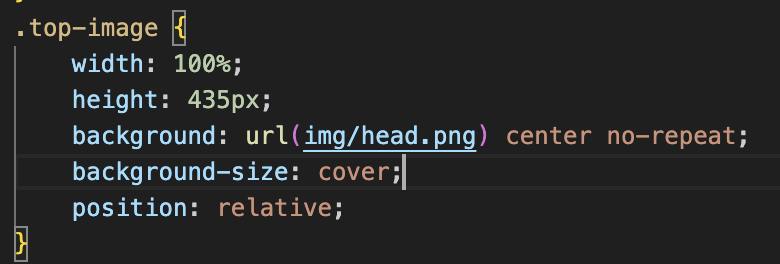
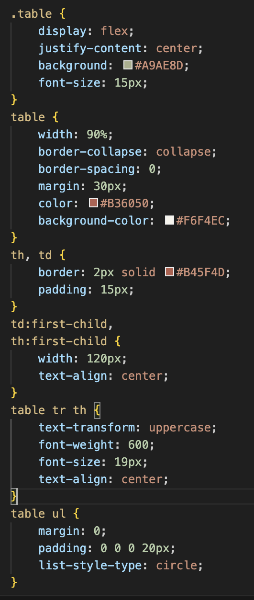

Студентка: гр. ІК-11, Дехтярук Вікторія Миколаївна
Тема: СТРУКТУРА HTML-ДОКУМЕНТА. ВИБІР ПРЕДМЕТНОЇ ГАЛУЗІ. РОБОТА З ПОСИЛАННЯМИ, ТАБЛИЦЯМИ, ЗОБРАЖЕННЯМИ, СПИСКАМИ в HTML-ДОКУМЕНТІ.
Мета: придбати практичні навички роботи з HTML-документом, таблицями, , зображеннями, посиланнями, списками, формами Створити шаблон звітного HTML-документом для відображення результатів роботи всіх лабораторних робіт.
Посилання на CV
Посилання на WEB-застосунок
Тема: КАСКАДНІ ТАБЛИЦІ СТИЛІВ. СЕЛЕКТОРИ .ІДЕНТИФІКАТОРИ. СТИЛЬОВЕ ОФОРМЛЕННЯ ТЕКСТОВИХ ЕЛЕМЕНТІВ В HTML-ДОКУМЕНТАХ.
Мета: придбати практичні навички роботи з селекторами, ідентифікаторами, списками, різноманітними властивостями кольору і фону, зовнішними та внутрішними відступами, плаваючими елементами, оформленням текстових елементів.
1. Вбудований (Inline CSS):
В цьому методі стилі задаються безпосередньо в атрибуті style кожного HTML елемента.
2. Внутрішній (Internal CSS):
Використовується тег style, який поміщається всередині тега head HTML документу. Внутрішній CSS впливає на всі елементи сторінки.
3. Зовнішній (External CSS):
CSS правила зберігаються у зовнішньому файлі з розширенням .css, а потім підключаються до HTML документу за допомогою тега link. Цей спосіб дозволяє використовувати ті ж самі стилі для кількох сторінок сайту і спрощує управління кодом.
універсальний селектор
дочірній селектор
вибір різних дочірніх елементів
селектор атрибуту
задавання фону
задавання фону картинкою
стилі для таблиці